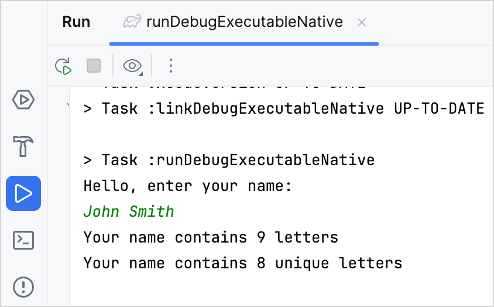

In this tutorial, you'll learn how to create a Kotlin/Native application. Choose the tool that works best for you and create your app using:
The IDE
. Here, you can clone the project template from a version control system and use it in IntelliJ IDEA.
The Gradle build system
. To better understand how things work under the hood, create build files for your project manually.
The command line tool
. You can use the Kotlin/Native compiler, which is shipped as a part of the standard Kotlin distribution, and create the app directly in the command line tool.
Console compilation may seem easy and straightforward, but it doesn't scale well for larger projects with hundreds of files and libraries. For such projects, we recommend using an IDE or a build system.
With Kotlin/Native, you can compile for
different targets
, including Linux, macOS, and Windows. While cross-platform compilation is possible, which means using one platform to compile for a different one, in this tutorial, you'll be targeting the same platform you're compiling on.
In IDE
In this section, you'll learn how to use IntelliJ IDEA to create a Kotlin/Native application. You can use both the Community Edition and the Ultimate Edition.
Clone the
project template
by selecting
File
|
New
|
Project from Version Control
in IntelliJ IDEA and using this URL:
https://github.com/Kotlin/kmp-native-wizard
Open the
gradle/libs.versions.toml
file, which is the version catalog for project dependencies. To create Kotlin/Native applications, you need the Kotlin Multiplatform Gradle plugin, which has the same version as Kotlin. Ensure that you use the latest Kotlin version:
Go to
Settings | Build, Execution, Deployment | Compiler
.
On the
Compiler
page, select
Build project automatically
.
Apply the changes.
Now, when you make changes in the class files or save the file (
Ctrl + S
/
Cmd + S
), IntelliJ IDEA automatically performs an incremental build of the project.
Update the application
Let's add a feature to your application so it can count the number of letters in your name:
In the
Main.kt
file, add code to read the input. Use the
readln()
function to read the input value and assign it to the
name
variable:
fun main() {
// Read the input value.
println("Hello, enter your name:")
val name = readln()
}
To run this app using Gradle, specify
System.in
as the input to use in the
build.gradle.kts
file and load the Gradle changes:
Use the
replace()
function to remove the empty spaces in the name.
Use the scope function
let
to run the function within the object context.
Use a
string template
to insert your name length into the string by adding a dollar sign
$
and enclosing it in curly braces –
${it.length}
.
it
is the default name of a
lambda parameter
.
fun main() {
// Read the input value.
println("Hello, enter your name:")
val name = readln()
// Count the letters in the name.
name.replace(" ", "").let {
println("Your name contains ${it.length} letters")
}
}
Run the application.
Enter your name and enjoy the result:
Now let's count only the unique letters in your name:
In the
Main.kt
file, declare the new
extension function
.countDistinctCharacters()
for
String
:
Convert the name to lowercase using the
.lowercase()
function.
Convert the input string to a list of characters using the
toList()
function.
Select only the distinct characters in your name using the
distinct()
function.
Count the distinct characters using the
count()
function.
fun String.countDistinctCharacters() = lowercase().toList().distinct().count()
Use the
.countDistinctCharacters()
function to count the unique letters in your name:
fun String.countDistinctCharacters() = lowercase().toList().distinct().count()
fun main() {
// Read the input value.
println("Hello, enter your name:")
val name = readln()
// Count the letters in the name.
name.replace(" ", "").let {
println("Your name contains ${it.length} letters")
// Print the number of unique letters.
println("Your name contains ${it.countDistinctCharacters()} unique letters")
}
}
Run the application.
Enter your name and see the result:

Using Gradle
In this section, you'll learn how to manually create a Kotlin/Native application using
Gradle
. It's the default build system for Kotlin/Native and Kotlin Multiplatform projects, which is also commonly used in Java, Android, and other ecosystems.
Create project files
To get started, install a compatible version of
Gradle
. See the
compatibility table
to check the Kotlin Gradle plugin (KGP) compatibility with available Gradle versions.
Create an empty project directory. Inside it, create a
build.gradle(.kts)
file with the following content:
// build.gradle.kts
plugins {
kotlin("multiplatform") version "2.1.0"
}
repositories {
mavenCentral()
}
kotlin {
macosArm64("native") { // on macOS
// linuxArm64("native") // on Linux
// mingwX64("native") // on Windows
binaries {
executable()
}
}
}
tasks.withType<Wrapper> {
gradleVersion = "8.10"
distributionType = Wrapper.DistributionType.BIN
}
// build.gradle
plugins {
id 'org.jetbrains.kotlin.multiplatform' version '2.1.0'
}
repositories {
mavenCentral()
}
kotlin {
macosArm64('native') { // on macOS
// linuxArm64('native') // on Linux
// mingwX64('native') // on Windows
binaries {
executable()
}
}
}
wrapper {
gradleVersion = '8.10'
distributionType = 'BIN'
}
You can use different
target names
, such as
macosArm64
,
iosArm64
linuxArm64
, and
mingwX64
to define the targets for which you are compiling your code. These target names can optionally take the platform name as a parameter, which in this case is
native
. The platform name is used to generate the source paths and task names in the project.
Create an empty
settings.gradle(.kts)
file in the project directory.
Create a
src/nativeMain/kotlin
directory and place a
hello.kt
file inside with the following content:
fun main() {
println("Hello, Kotlin/Native!")
}
By convention, all sources are located in the
src/<target name>[Main|Test]/kotlin
directories, where
Main
is for the source code and
Test
is for tests.
<target name>
corresponds to the target platform (in this case,
native
), as specified in the build file.
Build and run the project
From the root project directory, run the build command:
./gradlew nativeBinaries
This command creates the
build/bin/native
directory with two directories inside:
debugExecutable
and
releaseExecutable
. They contain the corresponding binary files.
By default, the name of the binary file is the same as the project directory.
To run the project, execute the following command:
Look for a file with
kotlin-native
in the name and download one that is suitable for your operating system, for example
kotlin-native-prebuilt-linux-x86_64-2.0.21.tar.gz
.
Unpack the archive to a directory of your choice.
Open your shell profile and add the path to the compiler's
/bin
directory to the
PATH
environment variable:
export PATH="/<path to the compiler>/kotlin-native/bin:$PATH"
Create the program
Choose a working directory and create a file named
hello.kt
. Update it with the following code:
fun main() {
println("Hello, Kotlin/Native!")
}
Compile the code from the console
To compile the application, execute the following command with the downloaded compiler:
kotlinc-native hello.kt -o hello
The value of the
-o
option specifies the name of the output file, so this call generates the
hello.kexe
binary file on macOS and Linux (and
hello.exe
on Windows).